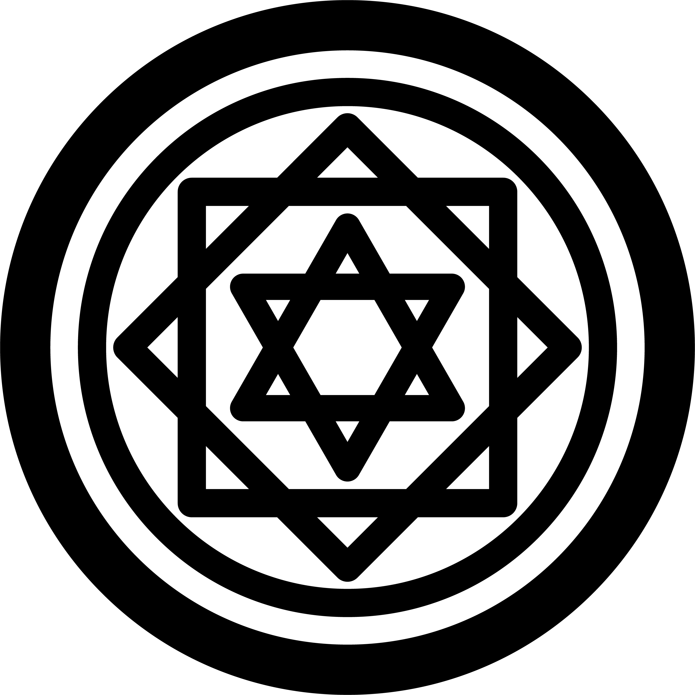
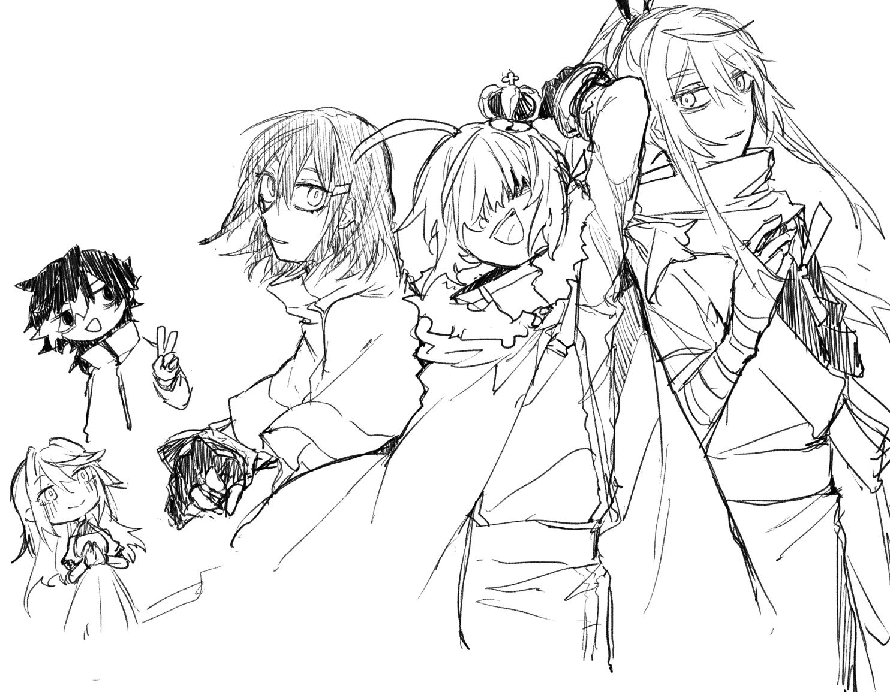
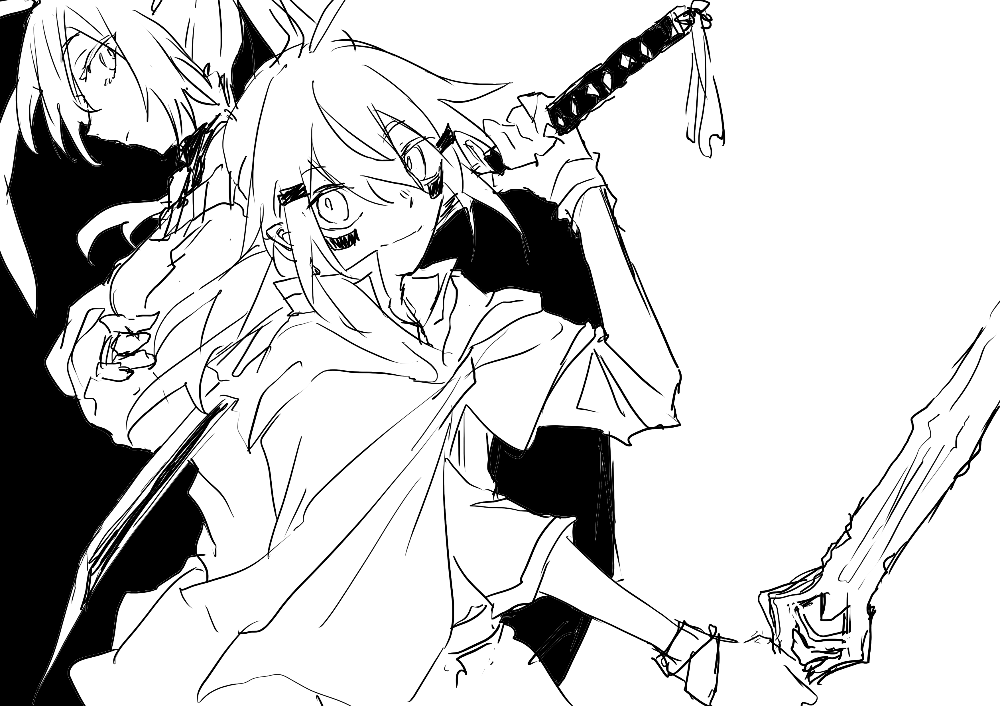
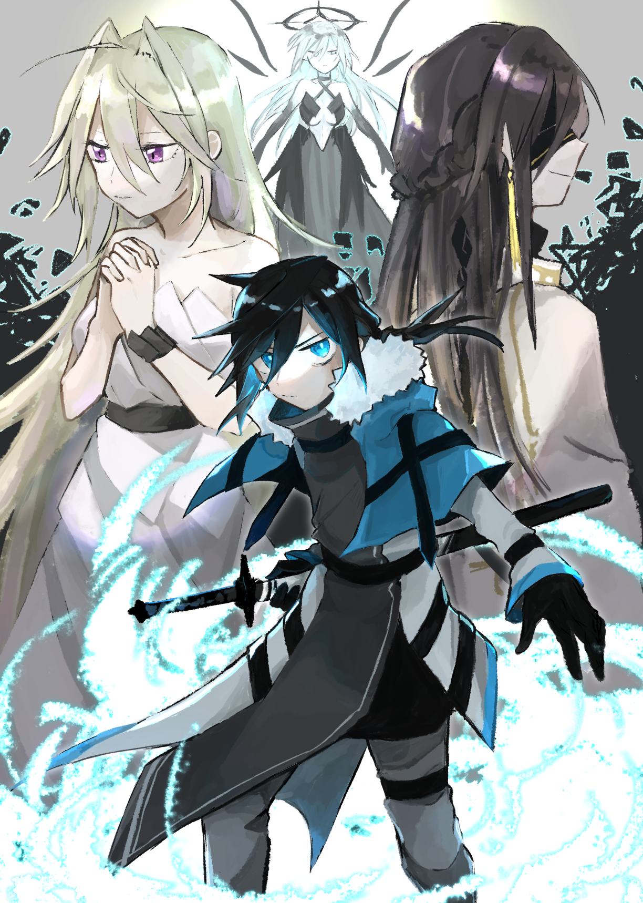
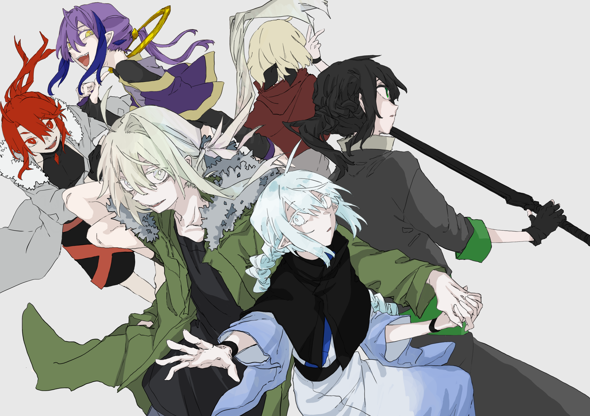
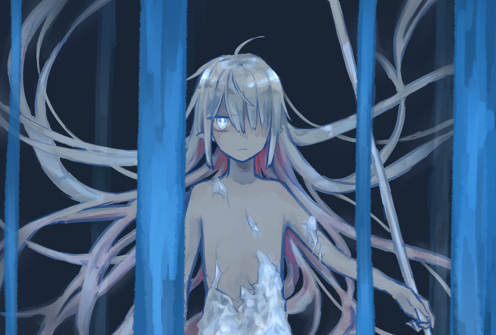

幻想世界
地球上と表裏一体であり神の力と魔術によって成り立つ特殊な空間。世界の終焉を十回繰り返すことで真の破滅を迎えるとされている。
- 5層:1066年目 -
絶大な力を持つ竜種である宝竜唯一の生き残りであり、生きる魔導書とも呼ばれる宝竜グリモア(以下グリム)。死んでしまった依存相手である宝竜クリスタル(以下水晶)を蘇生させるために、20年程前に世界を一時的に歪める程の儀式を行い、その結果蘇生には成功したものの、同時にかつて封印の後に殺された前代のグリモアを呼び寄せてしまい、自分の身体を乗っ取られるという大間抜けを晒した。
グリムは水晶を蘇らせる過程で作った自分の肉体のスペアを使い、自らの身体を取り戻すために反撃の準備を始める。そして、前代グリモアに因縁のある騎士の兄弟とその幼馴染の少女を仲間にし、確実に前代グリモアを倒すために、主神の遺産の一つである必勝の槍とそれを使える神格を召喚すべく動き出す。
Asgartha

新生国アスガルタ。
魔術大国から独立したばかりでありながらも急速に力をつけている国。元々力のある自治区であったことに加え、独立の立役者国王クラウンによる天才的な采配により既に他国にとって無視できない存在となっている。しかしあまりにも短すぎる期間に力をつけすぎたため各国から強く警戒されており、良くも悪くも最も注目を集める国として名を轟かせている。
国の英雄とも呼べる国王クラウンだが本人は謎に包まれており、出自が不明ながらも国民から絶対的な支持を得ている奇妙な人物。とされているが、その正体はグリムであり、打倒前代グリモアの拠点として国をひとつ作り上げただけである。
神域

この世界においての神々と竜種が住む断崖絶壁に囲まれた島であり、未だ空を飛ぶ術を持たない人間には侵入不可能の神の領域。この世界の運用に必要な神格持ちと世界の管理者と呼ばれる神が居る世界の中枢でもあり、神々がこの地を離れることはほとんどない。現在は太陽神代理の八咫烏と月神代理の玉兎が長として君臨している。
炎華
強国炎華。
神から神格を奪いその力を行使できる特殊な人間である神使いが王として君臨しており、神々による支配を終わらせようという風潮が強い国。国内には火山が多く存在し、都は世界有数の温泉地でもある。魔術の才能が強弱を決める基準となっているこの世界において珍しく魔術を重要視しない国でもあり、王族が一切魔術を使えないにも関わらず、大陸一の強国と呼ばれるにまで至った。世界が完全に神によって支配されている現状を良しとしていないことも相まって常にどことなく不穏な空気を漂わせている。
Foresthia
エルフの国フォレスティア。
種族として優れた魔術適正を持つエルフが統べる国であり、国民の約7割がエルフ。何かと厄介事の多い炎華の隣国でありながら、最も平和な国として名が知られている。女王リーフとその妹ローズによって統治が行われており、豊かな国土とエルフによる繊細な魔術産業で発展を続けている。
- parallel world:終焉 -
かつてこの世界を作ったとされるオーディンに作られた「動く魔力貯蔵庫グリモア」。無尽蔵の魔力と膨大な魔術知識を持つ主神の遺産そのものであるソレはその力に溺れた結果神々との争いに敗北し封印され、形を変え無力化された。しかしこの世には分岐点というものが存在する。魔術の申し子グリモアが神々に勝利し、この世界を支配するバッドエンドの可能性は、存在する。
中枢都市

下町に住む傭兵の一人息子アルバは、幼い頃に行方不明となった幼馴染の少女ミカエラを探し続けて生きてきた。ミカエラが世界を安定させる楔として唯一神に囚われているという噂を聞いたアルバはミカエラを取り戻すために単身神へ挑む。時は10層500年、そして5層104X年で世界が歪む直前のこと。
- 5層:1069年目 -
グリムとグリモア、騎士二人と唯一神を名乗った主神の遺産の因縁が決しておよそ三年。多くの人が知る由もなかった争いが終わったところで世界は平和になることはなく、数年前から渦巻く炎華を中心とした不穏な空気は日ごとに増していく。
Arcadia

アルカディア。
水晶蘇生のためにグリムによって作られた国という名の巨大な実験場であり、便宜上国王は存在するものの、実質的にグリムの支配下にある。少し前まではグリムの中身が別物になっていたおかげで長らく内紛状態だったが、それも昔の話となり、現在は国の政治など全て現国王ロウに任され、物々しい雰囲気の炎華とは離れていることもあり今は穏やかな状勢となっている。
northern
環境の厳しさ故に人の寄り付かない北方地域。地図上ではアルカディア国内ではあるものの、実質無主地のような扱いである。
何も無い雪原の奥に「雪(セツ)」という名の研究者とテュールという神格持ちの人間の青年が住み着いており、人工的な神についての研究を行っている。雪はグリムの友人であり、グリムに水晶の蘇生を提案した諸悪の根源でもある。
- 4層:終焉 -
神域:宝竜の里

かつて4層神域に存在した宝竜達が住む里。4層終焉の際に宝竜というあまりにも力をつけすぎた種族を制御しきれないと判断した神々によって処分が行われた。処分を実行したのは宝竜の長であり最強の魔術使いと謳われた水晶であり、グリム一人の命と引き換えに同族殺しを請け負った。この時に宝竜はほぼ全滅したとされているが、厳密には宝竜に死の概念はなく、全員封印されているだけである。